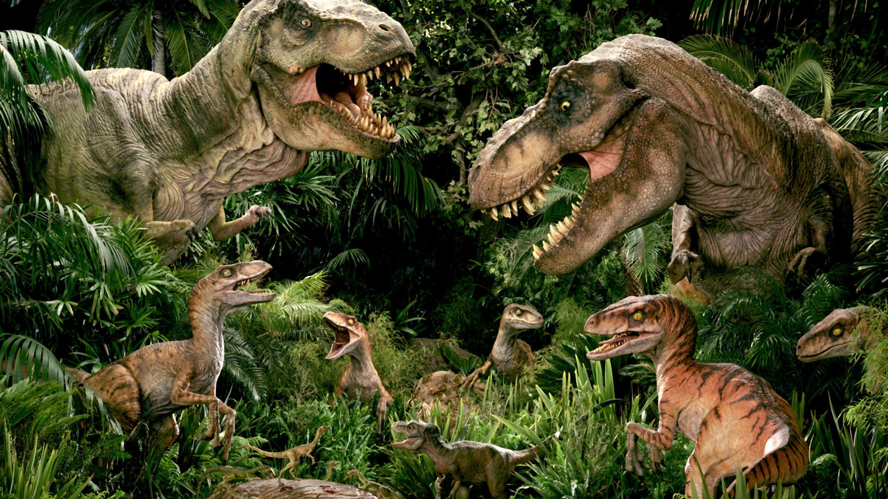
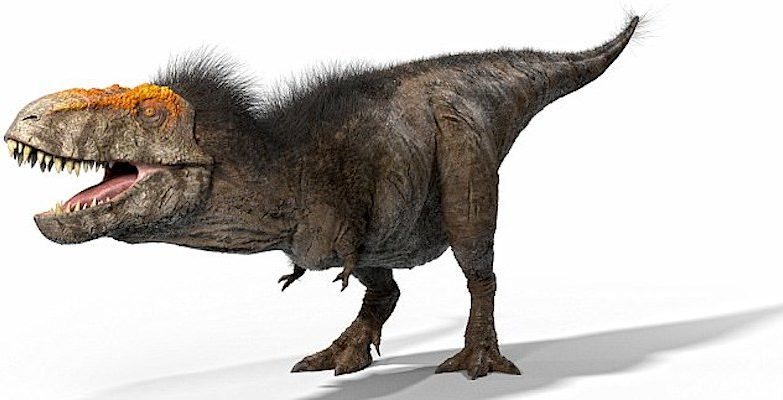
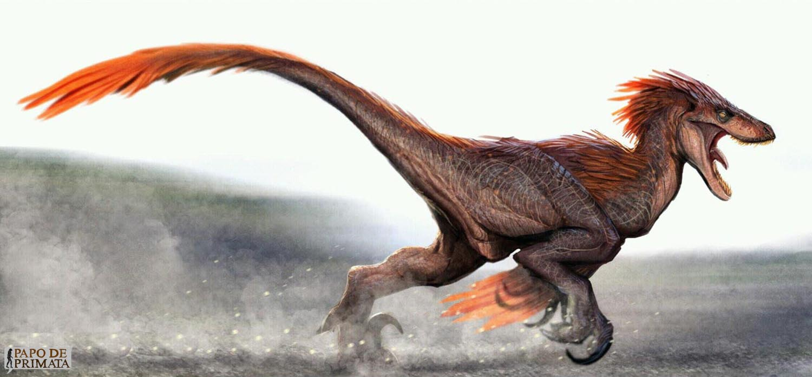
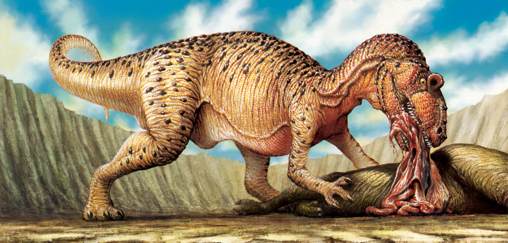
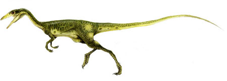

dinossauros carnívoros, pertencentes ao grupo dos terópodes, foram os maiores predadores do planeta. Caracterizados por seus dentes afiados, olhar penetrante e garras temíveis, alguns caçavam sozinhos, enquanto outros caçavam em manadas. Da mesma forma, dentro do grande grupo dos dinossauros carnívoros, havia uma escala natural que classificava no topo os predadores mais ferozes, que podiam se alimentar de carnívoros menores, e deixavam as posições inferiores para os carnívoros que se alimentavam de dinossauros menores (principalmente os herbívoros), de insetos ou de peixes.
Como é o caso dos animais carnívoros de hoje, os dinossauros pertencentes ao grupo dos terópodes se alimentavam de outros dinossauros, pequenos animais, peixes ou insetos. Alguns dinossauros carnívoros eram grandes predadores terrestres que se alimentavam apenas do que caçavam, outros eram pescadores, pois só comiam animais aquáticos, outros eram carniceiros e outros ainda praticavam o canibalismo. Assim, nem todos os carnívoros comiam a mesma coisa nem obtinham esses alimentos da mesma maneira. Esses dados foram obtidos, principalmente, graças ao estudo das fezes fossilizadas desses grandes répteis.
O mais famoso dos dinossauros viveu durante o último andar do Cretáceo, há cerca de 66 milhões de anos, onde é hoje a América do Norte, e existiu há dois milhões de anos. Etimologicamente, seu nome significa "rei lagarto tirano", pois deriva das palavras gregas "tyranno", que se traduz como "déspota", e "saurus", que não significa outra coisa senão "semelhante a um lagarto". "Rex", por sua vez, vem do latim e significa "rei". O tiranossauro rex foi um dos maiores e mais vorazes dinossauros terrestres que existiram, com um comprimento aproximado de 12 a 13 metros, 4 metros de altura e um peso médio de 7 toneladas. Além de seu tamanho enorme, era caracterizado por ter uma cabeça muito maior que os demais dinossauros carnívoros. Devido a isso, e para manter o equilíbrio de todo o corpo, seus membros anteriores eram muito mais curtos que o normal, a cauda era muito longa e os quadris proeminentes. Por outro lado, e apesar de sua aparência nos filmes, foram encontradas evidências de que o Tiranossauro Rex tinha parte do corpo coberto de penas. O tiranossauro rex caçava em manada e também se alimentava de carniça, pois, embora tenhamos dito que os grandes dinossauros também eram rápidos, eles não eram tão rápidos quanto os outros devido ao seu volume e, portanto, supõe-se que às vezes eles preferiam aproveitar o trabalho dos outros e se alimentar de restos de cadáveres. Da mesma forma, foi demonstrado que, apesar da crença popular, o tiranossauro rex era um dos dinossauros mais inteligentes.
Há duas teorias diferentes sobre como o tiranossauro rex caçava. A primeira apoia a visão de Spielberg em seu filme Jurassic Park, que mostra que ele era um grande predador, localizado no topo da cadeia alimentar e que nunca perdia a oportunidade de caçar novas presas, com uma clara preferência por grandes dinossauros herbívoros. A segunda argumenta que o tiranossauro rex era, acima de tudo, carniceiro. Por esse motivo, destacamos que é um dinossauro que poderia ter sido alimentado através da caça ou do trabalho alheio.
Estudos realizados até o momento estimam que a longevidade do T. rex variava de 28 a 30 anos. Graças aos fósseis encontrados, foi possível determinar que os espécimes jovens, com aproximadamente 14 anos de idade, não pesavam mais de 1800 kg, e que a partir daí seu tamanho começava a aumentar consideravelmente até os 18 anos de idade, idade em que suspeita-se que o peso máximo era atingido. Os braços curtos e finos do tiranossauro rex sempre foram alvo de piadas e seu tamanho é ridiculamente pequeno em comparação com todo o corpo, tanto que eles mediam apenas um metro. De acordo com a anatomia deles, tudo parece indicar que eles se desenvolveram dessa maneira para equilibrar o peso da cabeça e para agarrar as presas.
Etimologicamente, o nome "velociraptor" vem do latim e significa "ladrão veloz", e graças aos fósseis encontrados, foi possível determinar que era um dos dinossauros carnívoros mais poderosos e eficazes da história. Com mais de 50 dentes afiados e serrilhados, sua mandíbula era uma das mais poderosas do Cretáceo, dado que o Velociraptor viveu no final do período onde hoje se encontra a Ásia.
Apesar do que mostra o famoso filme Jurassic World, o Velociraptor era um dinossauro bastante pequeno, com um comprimento máximo de 2 metros, pesando 15 kg e medindo meio metro até o quadril. Uma de suas principais características é o formato do crânio, alongado, estreito e achatado, bem como suas três garras poderosas em cada extremidade. Sua morfologia, em geral, era muito semelhante à das aves atuais. Por outro lado, outro fato que não aparece nos filmes de dinossauros é que o Velociraptor tinha penas por todo o corpo, uma vez que foram encontrados restos fossilizados que demonstram isso. No entanto, apesar de sua aparência de ave, este dinossauro não podia voar, mas corria nas duas patas traseiras e atingia grandes velocidades. Estudos indicam que ele podia percorrer até 60 quilômetros por hora. Suspeita-se que o desenvolvimento de penas seja um mecanismo do corpo para regular sua temperatura.
velociraptor tinha uma garra retrátil que lhe permitia segurar e rasgar sua presa sem a possibilidade de erro. Assim, supõe-se que ele agarrava sua presa pela área do pescoço com suas garras e atacava com sua mandíbula. Acredita-se que caçava em manada e é creditado com o título "excelente predador", embora tenha sido demonstrado que ele também podia se alimentar de carniça.
nome "allosaurus" é traduzido como "lagarto diferente ou estranho". Este dinossauro carnívoro habitou o planeta há mais de 150 milhões de anos, no local que é hoje a América do Norte e a Europa durante o final do Jurássico. É um dos terópodes mais estudados e conhecidos devido ao número de fósseis encontrados, motivo pelo qual não surpreende vê-lo presente em exposições e filmes.
Assim como o resto dos dinossauros carnívoros, o Allosaurus era um bípede, por isso andava sobre suas duas poderosas pernas. Sua cauda era longa e forte, usada como pêndulo para manter o equilíbrio. Como o Velociraptor, ele tinha três garras em cada membro que utilizava para caçar. Sua mandíbula também era poderosa e ele tinha cerca de 70 dentes afiados. Suspeita-se que o Allosaurus podia medir de 8 a 12 metros de comprimento, cerca de 4 de altura e pesar até duas 2 toneladas.
Este dinossauro carnívoro se alimentava, principalmente, de dinossauros herbívoros como o Stegosaurus. Quanto ao método de caça, devido aos fósseis encontrados, algumas teorias apoiam a hipótese de que o Allosaurus caçava em grupo, enquanto outras supõem que era um dinossauro que praticava canibalismo, ou seja, se alimentava de exemplares da sua própria espécie. Também acredita-se que se alimentava de carniça quando era necessário.
Asim como o Allosaurus, o Compsognathus habitou a Terra durante o final do Jurássico no que é atualmente a Europa. Seu nome se traduz como "mandíbula delicada" e ele era um dos menores dinossauros carnívoros. Graças ao magnífico estado dos fósseis encontrados, foi possível estudar em profundidade sua morfologia e alimentação.
Embora o tamanho máximo que Compshognathus pode ter alcançado não seja conhecido com certeza, o maior dos fósseis encontrados indica que ele poderia ter cerca de um metro de comprimento, 40-50 cm de altura e 3 kg de peso. Este tamanho reduzido permitia que atingisse altas velocidades de mais de 60 km/h. As pernas traseiras do Compshognathus eram longas, sua cauda também era alongada e era usada para ter equilíbrio. Os membros anteriores eram muito menores, com três dedos e garras. Quanto à cabeça, era estreita, alongada e pontiaguda. Em proporção ao tamanho total, seus dentes também eram pequenos, mas afiados e totalmente adaptados à sua dieta. No geral, era um dinossauro fino e ligeiro.
A descoberta dos fósseis indicou que o Compsognathus se alimentava principalmente de animais menores, como lagartos e insetos. De fato, um dos fósseis tinha o esqueleto de um lagarto inteiro no estômago, fato que o levou a ser inicialmente confundido com uma fêmea grávida. Assim, suspeita-se que era capaz de engolir suas presas inteiras.
Etimologicamente, "gallimimus" significa "que imita uma galinha". Esse dinossauro viveu no final do período cretáceo no local que hoje é a Ásia. Mas não se confunda com a tradução do nome, porque o Gallimimus era semelhante a um avestruz em termos de tamanho e morfologia, de modo que, embora fosse um dos dinossauros mais leves, era muito maior que o anterior, por exemplo.
O Gallimimus foi um dos maiores dinossauros terópodes pertencentes ao gênero Ornithomimus, medindo entre 4 e 6 metros de comprimento e pesando até 440 kg. Como dissemos, sua aparência era semelhante à do avestruz atual, com uma cabeça pequena, pescoço longo, olhos grandes localizados em cada lado do crânio, pernas longas e fortes, membros dianteiros curtos e cauda longa. Por suas características físicas, suspeita-se que fosse um dinossauro veloz, capaz de fugir de predadores maiores, embora a velocidade que ele podia atingir não seja conhecida com precisão.
Suspeita-se que o Galimimus seja mais um dinossauro onívoro, pois acredita-se que se alimentava de plantas e pequenos animais, e especialmente de ovos. Esta última teoria é apoiada devido ao tipo de garras que possuía, perfeitas para cavar no chão e desenterrar suas "presas".
Este dinossauro terópode tiranossauro habitou a Terra durante o final do período Cretáceo na atual América do Norte. Seu nome é traduzido como "lagarto de Alberta", e apenas uma espécie é conhecida, Albertosaurus sacrophagus, de maneira que ainda não se sabe quantas podem ter existido. A maioria dos espécimes encontrados vivam em Alberta, uma província canadense, fato que deu origem ao seu nome.
O Albertosaurus pertence à mesma família do T. rex, portanto são parentes diretos, embora o primeiro tenha sido muito menor que o segundo. Suspeita-se que tenha sido um dos maiores predadores da região em que viveu, graças, sobretudo, à sua poderosa mandíbula com mais de 70 dentes curvos, número bastante alto em comparação com outros dinossauros carnívoros. Podia atingir um comprimento de 10 metros e um peso médio de 2 toneladas. Seus membros posteriores eram curtos, enquanto os anteriores eram longos e fortes, equilibrados por uma cauda longa que, em conjunto, permitiam ao Albertosaurus atingir uma velocidade média de 40 km/h, nada mal para o seu tamanho. Seu pescoço era curto e o crânio grande, com cerca de um metro de comprimento.
Graças à descoberta de vários espécimes juntos, foi possível deduzir que o Albertossaurus era um dinossauro carnívoro que caçava em grupos de 10 a 26 indivíduos. Com essas informações, é fácil entender por que ele era um dos maiores predadores da época, certo? Nenhuma presa poderia escapar do ataque mortal de 20 Albertossaurus... No entanto, essa teoria não é totalmente corroborada, pois existem outras hipóteses sobre a descoberta do grupo, como a competição entre eles por presas mortas.
O Dilofossauro (Dilophosaurus wetherlli) foi uma espécie de dinossauro terópode da família Ceratosauridae, que viveu no início do Período Jurássico (aproximadamente entre 193 a 205 milhões de anos atrás). Por suas características físicas é considerado um dinossauro de porte médio.